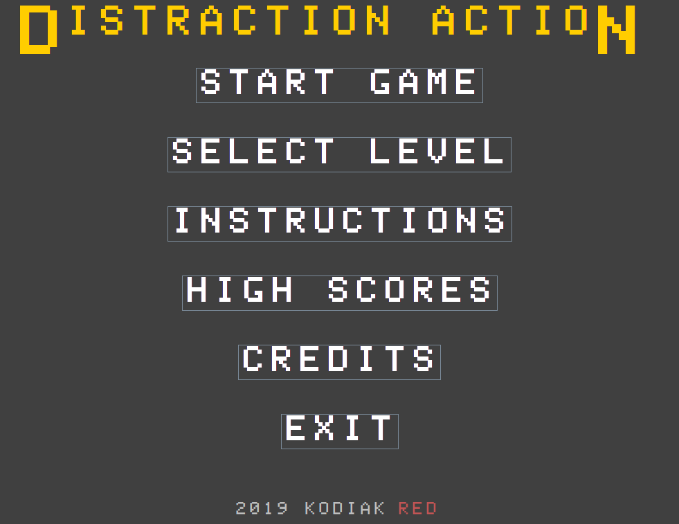
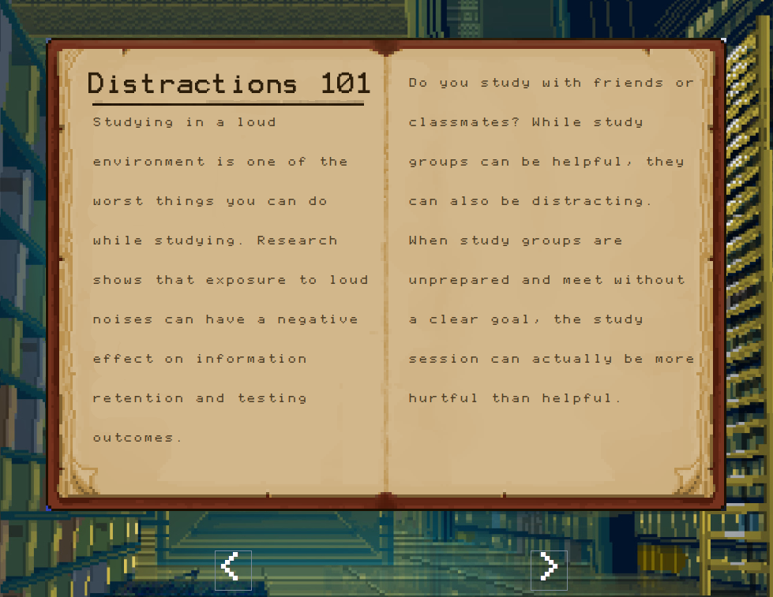
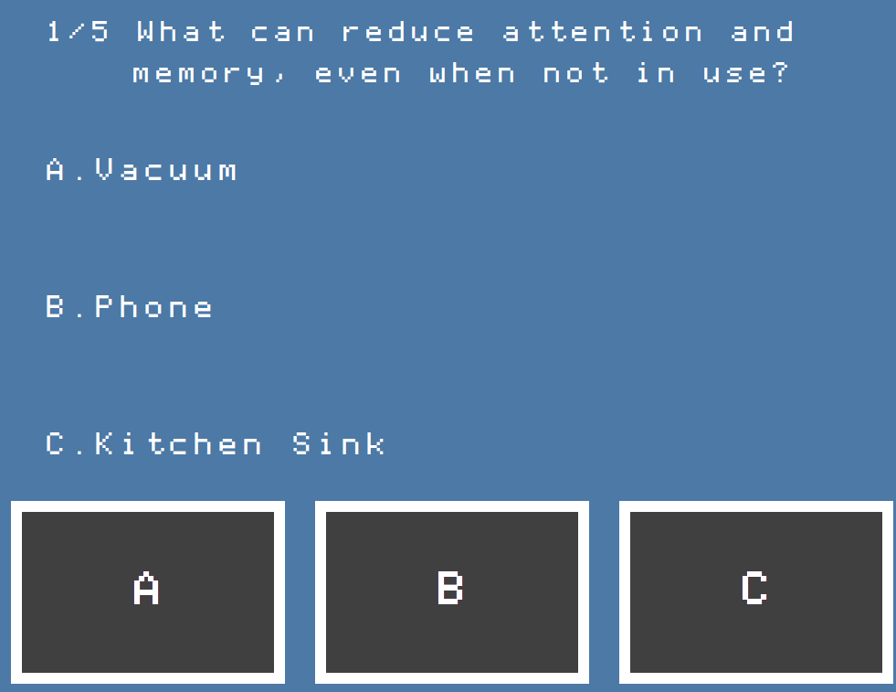
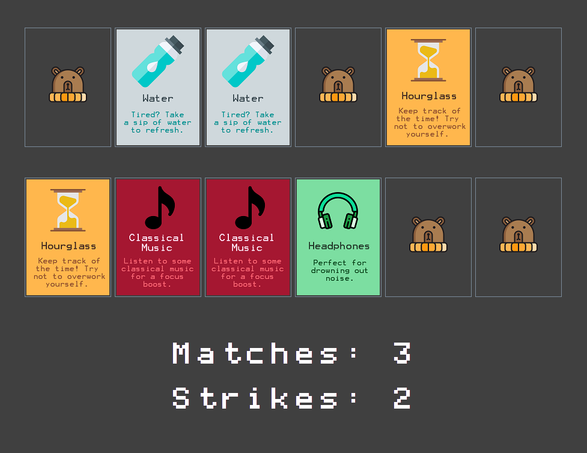
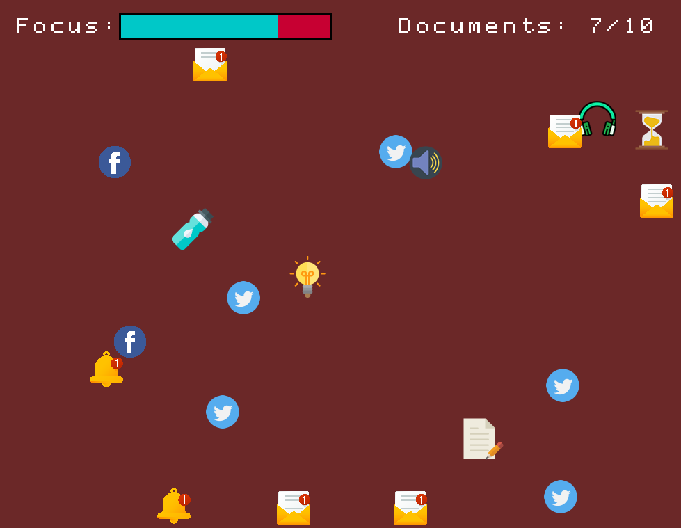

Written By Ryan Phan and Kevin Nguyen
My Contributions
Prior to the creation of Distraction Action, we were given our final project: Create an educational game to teach the player about overcoming adversity. Thus, Kevin and I settled on an issue we knew plagued us and many other students: Distractions. Our goal was to make a educational, but fun game to teach students aged 14-18, about the path to overcoming distractions. In order to achieve this goal, I made several contributions to the creation of the game. First off, our company needed a logo, which I designed the main elements of. In the initial planning stage, I designed the storyboard of the game, which mostly resembles the final product of our game. During the programming stages of the game, I wrote the splash screen and the main menu. With regards to the actual levels of the game, I wrote the mechanics of level one and I wrote level three. During the process, I worked closely with Kevin regarding the direction and design of our game. After a month of hard work, I can firmly say that I'm proud of what Kevin and I have achieved, and if you play this game, I really hope you enjoy it.
Main Menu |
The main menu of Distraction Action. |
| In Quick Quiz, you will read a book called Distractions 101 to learn about common distractions that can occur when studying. To navigate the book’s pages, you can click the arrows near the bottom of the screen or use the left and right arrow keys. |
Distractions 101Awareness and Education |
Quick QuizAwareness and Education |
After the book, you will take a quiz to test your knowledge. Simply press the button corresponding to your answer to select it. |
| In Matching Mayhem, you will have to match cards that have methods and tools to avoid distractions on them. Simply click a card to reveal it. Be careful though! There are two distraction cards mixed into the bunch.If you click any combination of these two cards more than twice, you will lose. |
Matching MayhemSolutions |
Dodging ArenaApplication |
In the Dodging Arena,you will apply your knowledge of distractions and how to avoid them by using the WASD keys dodge distractions, get boosts, and collect documents. Your goal is to collect 10 documents to finish your essay and get the highest mark possible. Every time you get hit by a distraction, you will lose focus, as indicated by the focus bar in the top left. If you lose all of your focus before collecting 10 documents, you will be forced to stop and hand in whatever you have of your essay for a lower mark. |